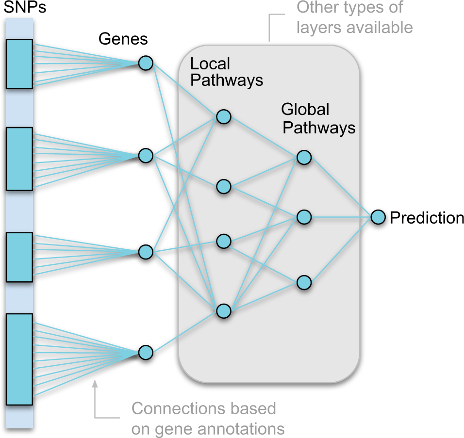
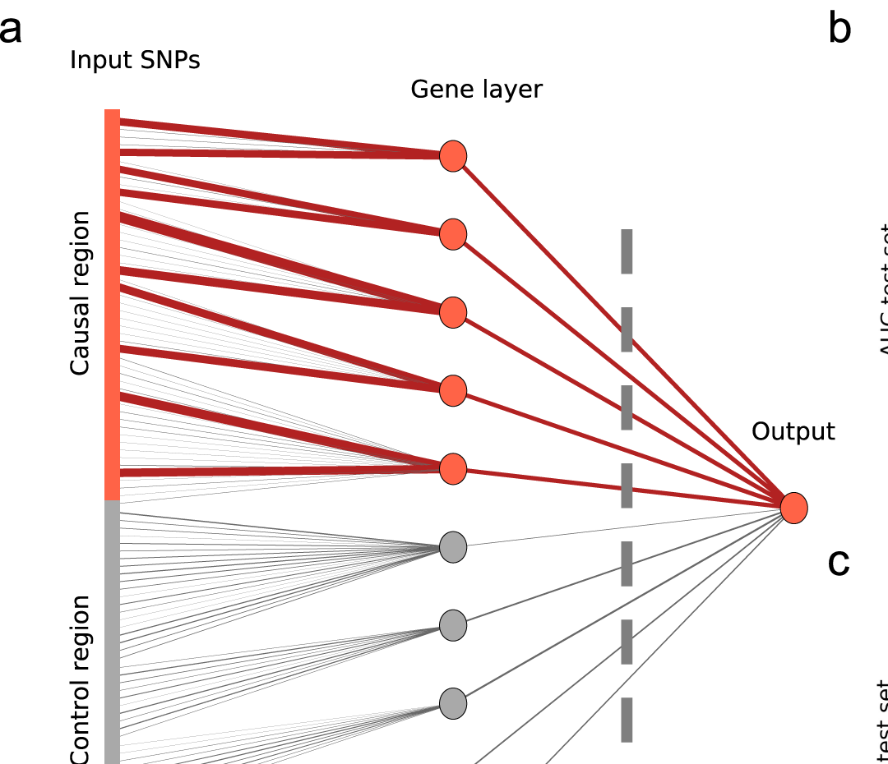
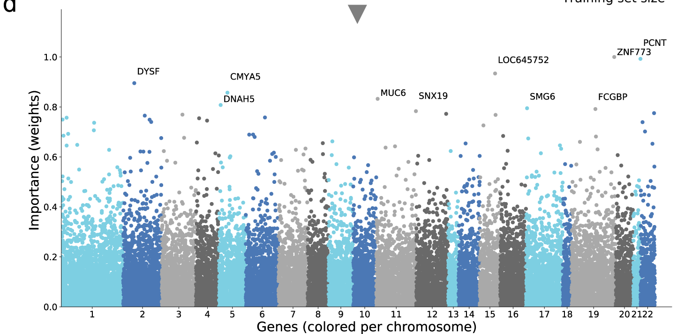
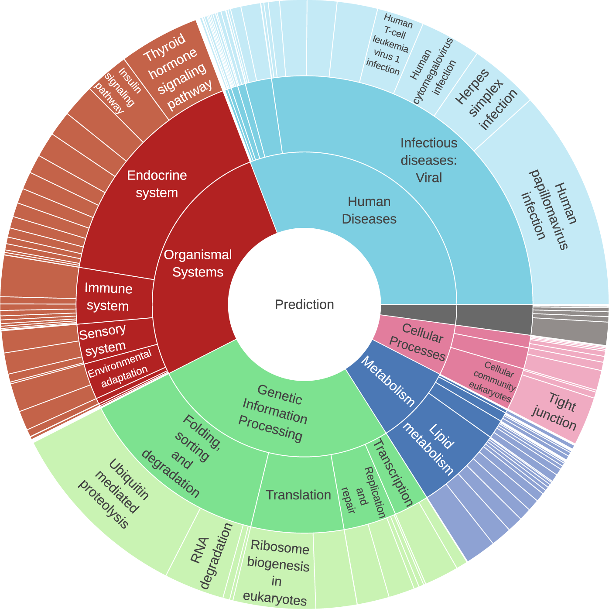
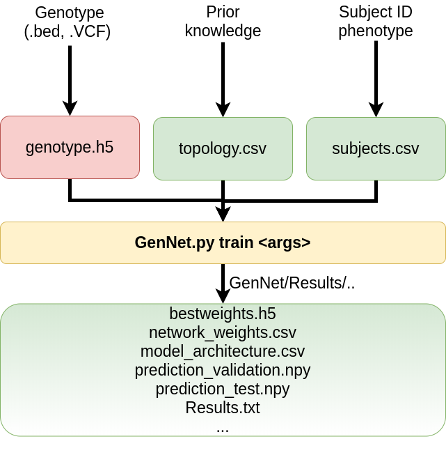

Neurepiomics 2026 · San Antonio · 1 hour
From genotype to named biology
GenNet: biologically structured neural networks for prediction and interpretation.
Gennady Roshchupkin · Erasmus MC · Computational Population Biology
Paper: van Hilten et al. Communications Biology 2021
Why this hour
Neurogenetics already ranks people well. Naming the biology is harder.
- PRS / GWAS — the right tool if the job is a risk ranking or a locus list.
- A trained net with biological wires — the right tool if the job is which annotated genes and pathways the predictor actually used.
- CHARGE already lives in the first world. GenNet is an attempt at the second, including interactions a linear score will miss.
The idea · van Hilten et al. 2021, Fig. 1

Fig. 1, Communications Biology 2021 · CC BY 4.0
You draw the wires. The net may only use those wires.
- SNPs connect only to their gene (Annovar, or your own table).
- Genes connect only to pathways (KEGG, GTEx, …).
- Learned weights sit on named edges — not on anonymous hidden units.
How you know it is reading the right genes · Fig. 2a

Fig. 2a · planted causal SNPs in red, noise in grey
Plant a cause. Ask whether the weights go there.
- Thick red edges: the net upweighted the causal gene.
- Grey: control SNPs, near-zero.
- That is today’s Colab, with an APOE-like gene and a planted SNP–SNP interaction.
What the 2021 paper showed
When the signal sits in annotated genes, the net can both predict and point.
- Eye / hair colour — recovered the obvious genes (HERC2, OCA2).
- Schizophrenia (Sweden exome) — AUC 0.74 vs lasso 0.65; top genes included ZNF773, PCNT.
- KEGG layers then name pathways, not only SNPs — viral infectious-disease pathways were the largest slice.
UK Biobank WES and Rotterdam Study eye colour were the other empirical settings. Exome only — not a genome-wide PRS bake-off.
Gene importance · Fig. 2d

Fig. 2d · schizophrenia, gene-layer weights · CC BY 4.0
A Manhattan plot, from weights not p-values.
- Same picture CHARGE already reads — different quantity.
- Importance ≈ effect along the allowed path, not a significance test.
- Schizophrenia is polygenic: many genes light up. Eye colour does not look like this.
Pathway importance · Fig. 3

Fig. 3 · KEGG sunburst, schizophrenia · read from the centre
The same weights, aggregated to biology you can say out loud.
- Centre = prediction.
- Rings = high → mid → low KEGG levels.
- Hypothesis generator: viral infection pathways, not a diagnosis.
Interpretation stack
Three questions, three tools.
| Question | Method | Today? |
|---|
| Which gene / pathway? | Weight-path product (Manhattan, sunburst) | Yes |
| Which SNP pair inside a gene? | NID — Tsang-style, strong joint incoming weights | Yes |
| Does knocking out A change B? | DFIM / PathExplain (Expected Hessian) | CLI, not this hour |
The A-to-Z Colab stops at Manhattan. Interaction is in the CLI and in this hour’s notebook.
Why bother with interaction
A linear PRS adds SNP effects. Biology often multiplies them.
- Two modest SNPs in the same gene can matter together and barely matter apart.
- Lasso will pick the stronger variant and shrink the partner.
- A gene node that sees both SNPs can learn a non-additive pattern — that is the point of the directed hidden layer.
Today we plant APOE_s0 × APOE_s1. If NID surfaces that pair, the idea worked.
NID, in one picture
Pairs that share a gene node with large incoming weights.
→
APOE gene
→
lipid pathway
→
phenotype
strength(i, j) = min(|wi|, |wj|) × |wgene→later|
DFIM is the slower cousin: perturb SNP i, watch whether SNP j’s importance moves. PathExplain uses the Hessian. Use those on a cluster, not in this room.
The longer programme
GenNet is the code that exists. ALIEN is the research map around it.
1. Data and knowledgeGenotypes, omics, gene maps, pathways, regulatory atlases — including brain context (BRAIN-MAGNET).
2. Define and trainChoose a topology and a training strategy. The mask is a scientific choice.
3. InvestigatePrediction, gene/pathway attribution, interaction, then replication. Not a diagnosis.
roshchupkin.org/alien — proposed workflow, not a second pip package.
Configuration

GenNet CLI overview
Three files. That is the whole input.
genotype.h5 | People × SNPs |
subjects.csv | ID, label, train/val/test |
topology.csv | Every allowed path |
Then train, plot, interpret.
Be honest
Where GenNet should win — and lose
- Lose on a typical highly polygenic trait vs a modern PRS (annotation-only SNPs, no LD clumping, hierarchical pooling).
- Win when signal is concentrated in annotated genes/pathways, or when the question is interaction inside those genes.
- The 2021 schizophrenia gain over lasso was real and modest. It is not “deep learning beat GWAS.”
This hour
A planted SVD-flavored toy, not a CHARGE analysis.
- 1,600 people × 192 SNPs × 24 named genes × 4 pathways.
- Planted: strong APOE, weaker COL4A1, interaction APOE_s0 × APOE_s1.
- You will check AUC vs lasso, a gene ranking, a Manhattan, and an NID table.
Gene names are a story scaffold. Do not quote them as WMH biology.
Practical
Open Colab. Runtime = CPU. Run all.
Launch the notebook
File → Save a copy in Drive first.- Inspect topology → train (~40 s) → AUC vs lasso → genes → Manhattan → NID.
- Homework: the original A-to-Z Colab on a machine with the GenNet conda env.
After today
Paper, code, and the map around them
- van Hilten et al. 2021 · GitHub ·
python GenNet.py interpret --help
- A-to-Z Colab for convert / Annovar. This hour for prediction + interaction.
- ALIEN: roshchupkin.org/alien
Questions.